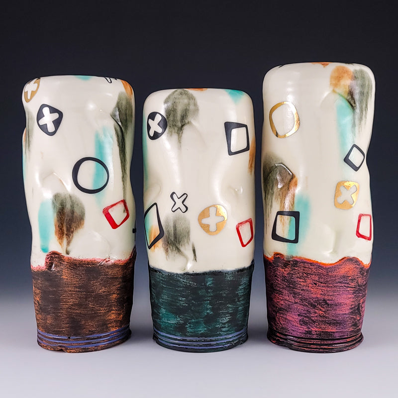
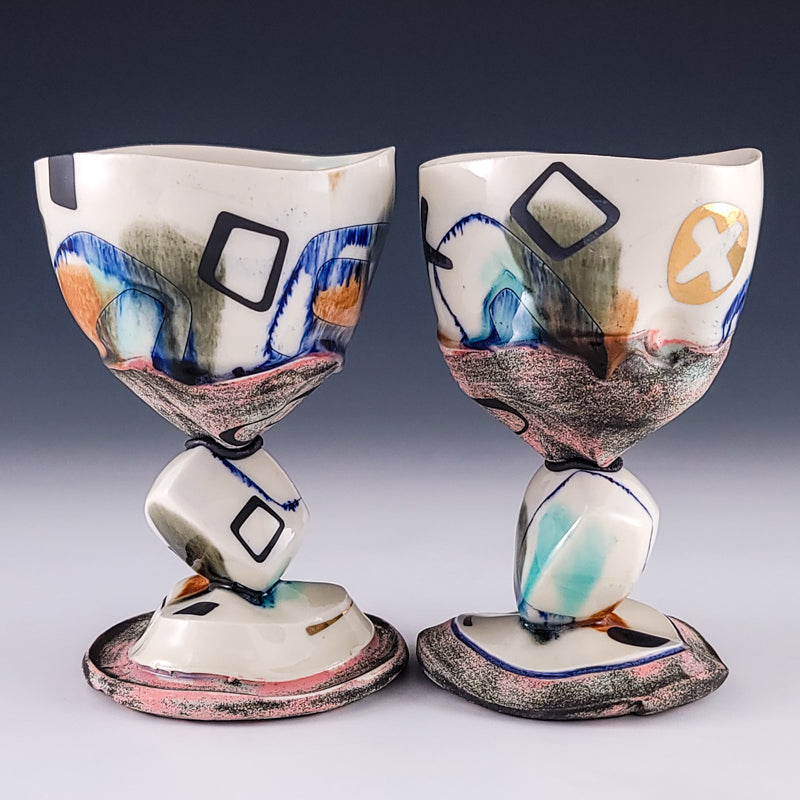
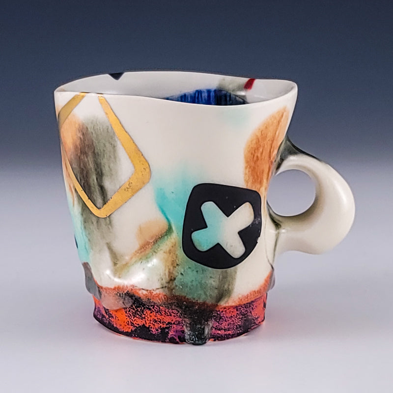
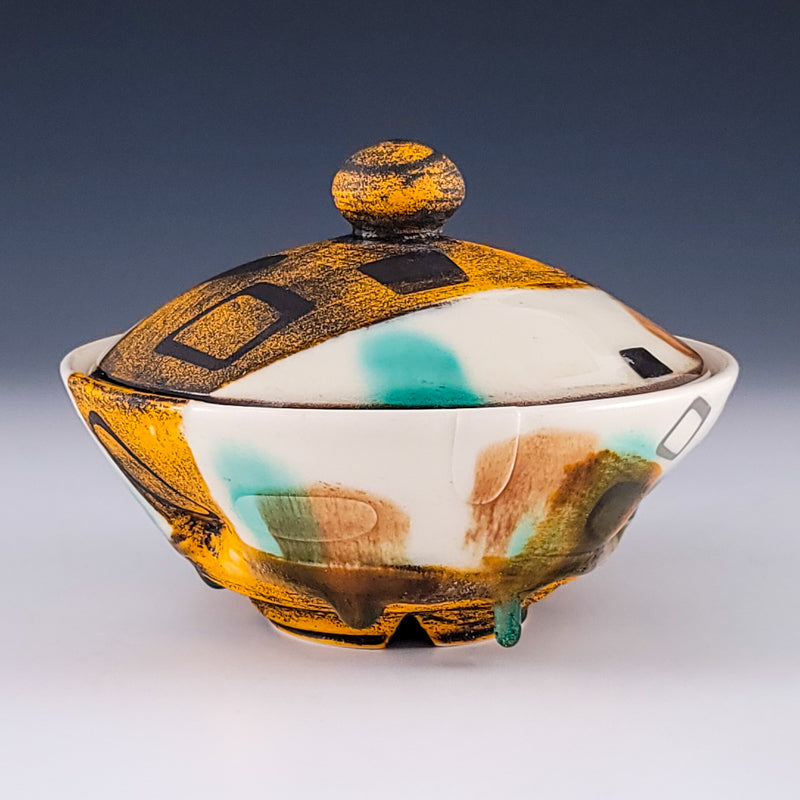
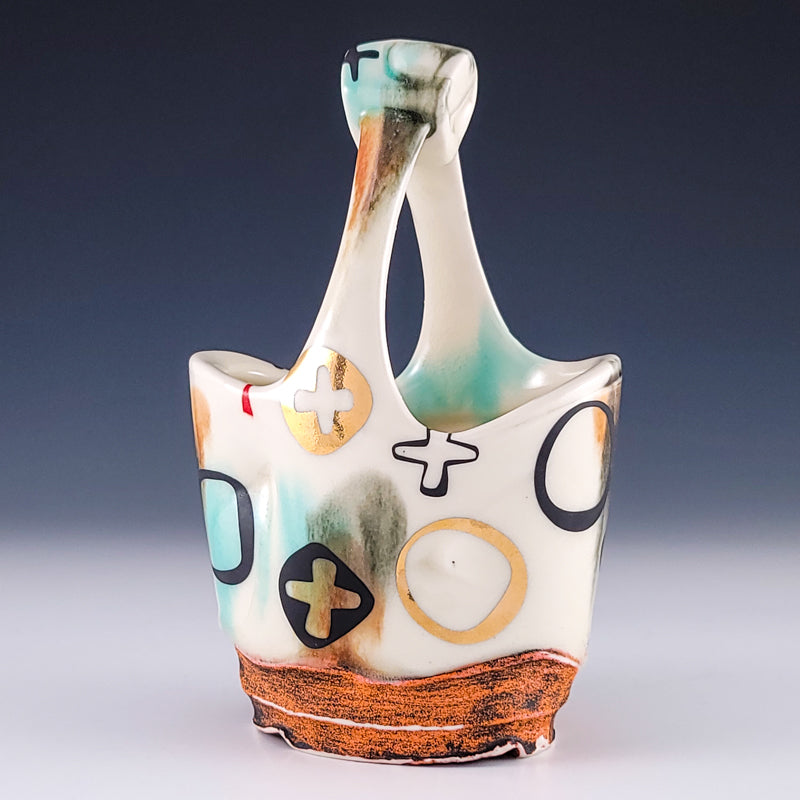
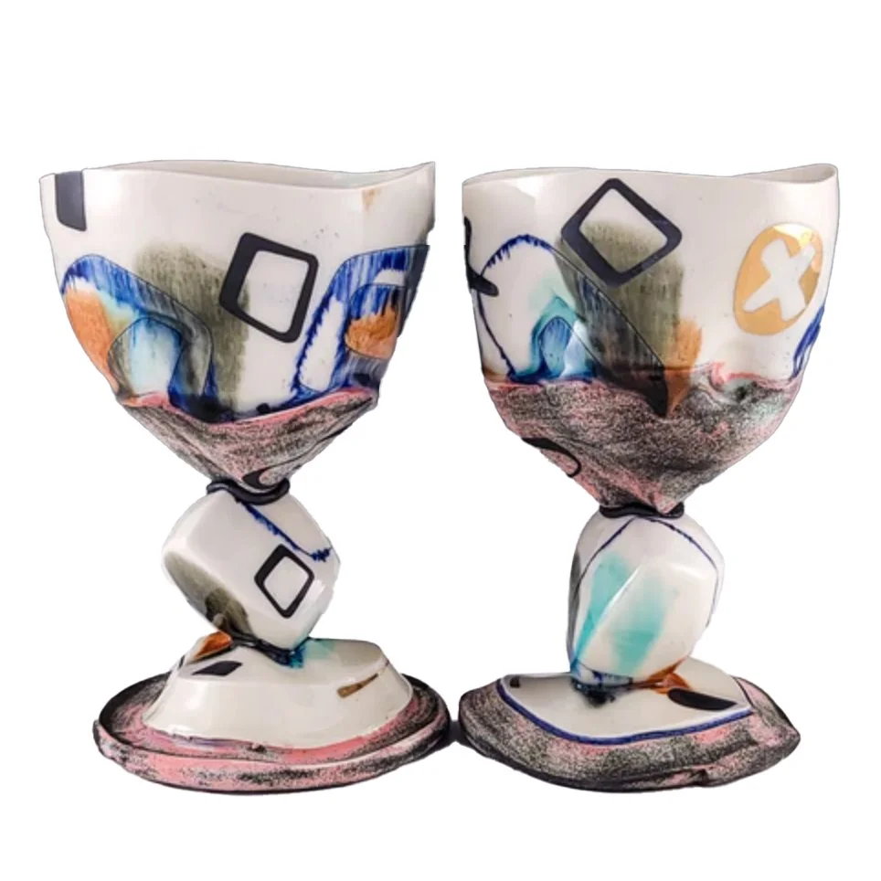
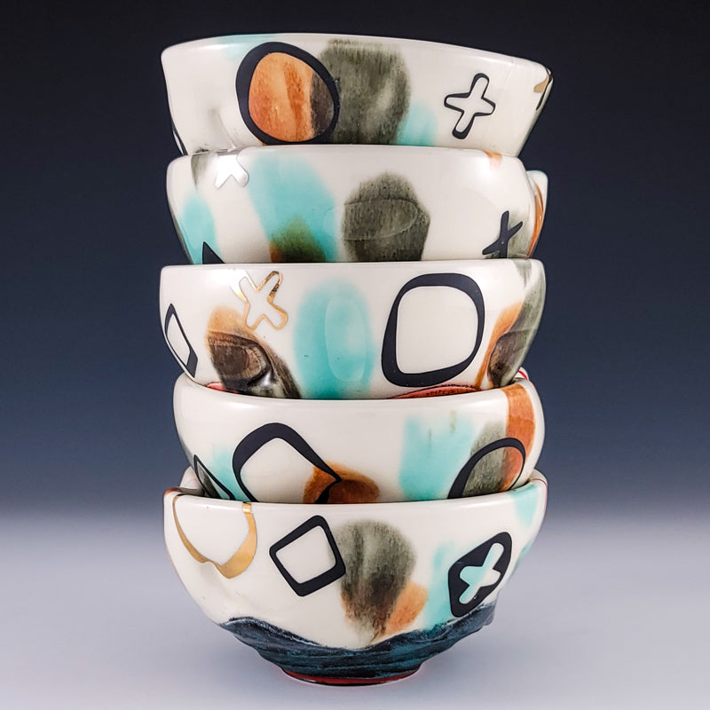

Selected work
One form at a time
Flower vessel
Pressurized volume and a quiet graphic mark — made to hold stillness as much as stems.

Vessel group
Soft indentations, cream glaze, and bases that feel dug from sediment — a conversation in proportion.

Goblets
Faceted stems and fluid washes — architecture meeting the hand at drinking height.

Mug
Daily use as ritual — gold square, cobalt interior, a foot that catches color like tide.

Lidded jar
Mustard, teal, and hard black geometry — containment as a kind of pause.

Studio form
Confidence of line held in soft clay — the inhale before the glaze settles.

Chalices
Cubed stems and open bowls — streamlining-era proportion translated into clay.

Assemblage
Forms grouped to slow the eye — surface, silhouette, and the space between.
Artist statement
Soft, inviting, generous, and strong — forms that feel as if they are inhaling.
I make utilitarian pottery with the intent to provide the user with an entrance into a memorable and contemplative experience. I wish to achieve cohesive forms that capture a confidence of line, with supporting crisp and energetic surface decoration.
Both in surface and form, I strive for a captured, pressurized volume within my work. I am interested in translating curvilinear patterns and line work into three-dimensional forms inspired by architecture and the Streamlining Era — jars, flower vases, and teapots that prompt the user to slow down.
About
Ray Brown
Ray Brown was born in Houston, Texas, and received his BFA in Art with Honors from the Sally McDonnell Barksdale Honors College at the University of Mississippi under Matt Long. He earned an MFA in Studio Art with an emphasis in Ceramics at West Virginia University.
His work has been shown nationally and internationally, including Jingdezhen, China. In 2019 he received the Studio Potter Merit Award at NCECA’s National Juried Student Exhibition. In 2024 he was named a Ceramics Monthly Emerging Artist. He currently serves as Instructor and Ceramic Studio Technician at the University of Mississippi in Oxford.
- Ceramics Monthly Emerging Artist, 2024
- Instructor and Ceramics Technician, University of Mississippi
- MFA Ceramics, West Virginia University
- BFA Ceramics with Honors, University of Mississippi
Contact
Start a conversation
Inquiries for available work, commissions, workshops, or exhibition opportunities are welcome.